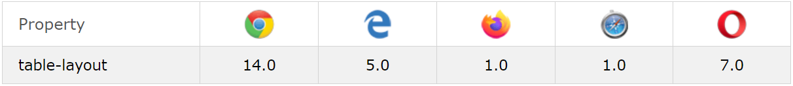

Table Layout
Introduction
Table Layout is a CSS property that defines how table cells, rows and columns are laid out and organised. Generally, using table layout is based-on preference and design choices.When set to auto, the browser will automatically apply certain constraints that define how tables are laid out. However, these constraints can be lifted when table-layout is set to fixed.
Browser Support
The browsers that support the Grid module/layout
CSS Table Layout Values
| # | Values | Description |
|---|---|---|
| 1 | Auto | The default algorithm to define how a table’s rows, cells, and columns are laid out. The resulting table layout is generally dependent on the content of the table. |
| 2 | Fixed | The table’s layout ignores the content and instead uses the table’s width, any specified width of columns, and border and cell spacing values. The column values used are based on widths defined on columns or cells for the first row of the table. |
| 3 | Inherit | The value is inherited from the table-layout value of its parent. |
| 4 | Initial | Sets the property to its default value. |